Introduction
This notebook cover the functionality of the Global Spatial Autocorrelation 1 section of the GeoDa workbook. We refer to that document for details on the methodology, references, etc. The goal of these notes is to approximate as closely as possible the operations carried out using GeoDa by means of a range of R packages.
The notes are written with R beginners in mind, more seasoned R users can probably skip most of the comments on data structures and other R particulars. Also, as always in R, there are typically several ways to achieve a specific objective, so what is shown here is just one way that works, but there often are others (that may even be more elegant, work faster, or scale better).
For this notebook, we use Cleveland house price data. Our goal in this lab is show how to assign spatial weights based on different distance functions.
Objectives
After completing the notebook, you should know how to carry out the following tasks:
Visualize Moran’s I with a Moran scatterplot
Carry out inference using the permutation approach
Make analysis reproducible with the random seed
Create a LOWESS smooth of the Moran scatter plot
Conduct a Chow test with the Moran scatterplot
Analyze the range of spatial autocorrelation by means of a spatial correlogram
R Packages used
sf: To read in the shapefile and make queen contiguity weights
spdep: To create k-nearest neighbors and distance-band neighbors, calculate distances between neighbors, convert to a weights structure, and coercion methods to sparse matrices.
ggplot2: To make customized plots such as a Moran’s I scatter plot and spatial correlogram.
Hmisc: To get LOWESS smoother functionality in ggplot2.
robustHD: To compute standarized scores for variables and lag variables. in construction of a Moran’s I scatterplot
deldir: To create voronoi polygons.
tidyverse: For basic data frame manipulation.
gap: To compute chow test statistics.
gridExtra: To pack multiple plots into one, mainly used to construct the spatial correlogram
geodaData: To access the data for this tutorial
R Commands used
Below follows a list of the commands used in this notebook. For further details and a comprehensive list of options, please consult the R documentation.
Base R:
install.packages,library,setwd,rep,sd,mean,summary,attributes,lapply,class,length,which,data.frame,plotsf:
st_read,st_relate,st_as_sfspdep:
dnearneigh,nb2listw,sp.correlogram,Szeroggplot2:
ggplot,geom_smooth,geom_point,xlim,ylim,geom_hline,geom_vline,geom_line,ggtitle,scale_x_continousHmisc:
stat_plsmorobustHD:
standardizeddeldir:
deldirtidyverse:
filtergap:
chow.testgridExtra:
grid.arrange
Preliminaries
Before starting, make sure to have the latest version of R and of packages that are compiled for the matching version of R (this document was created using R 3.5.1 of 2018-07-02). Also, optionally, set a working directory, even though we will not actually be saving any files.2
Load packages
First, we load all the required packages using the library command. If you don’t have some of these in your system, make sure to install them first as well as their dependencies.3 You will get an error message if something is missing. If needed, just install the missing piece and everything will work after that.
library(sf)
library(spdep)
library(ggplot2)
library(deldir)
library(robustHD)
library(Hmisc)
library(tidyverse)
library(gap)
library(gridExtra)
library(geodaData)geodaData website
All of the data for the R notebooks is available in the geodaData package. We loaded the library earlier, now to access the individual data sets, we use the double colon notation. This works similar to to accessing a variable with $, in that a drop down menu will appear with a list of the datasets included in the package. For this notebook, we use clev_pts.
Otherwise, to get the data for this notebook, you will and to go to Cleveland Home Sales The download format is a zipfile, so you will need to unzip it by double clicking on the file in your file finder. From there move the resulting folder titled: nyc into your working directory to continue. Once that is done, you can use the sf function: st_read() to read the shapefile into your R environment.
clev.points <- geodaData::clev_ptsMaking the weights
The weights used for this notebook are queen contiguity, based off voronoi polygons contructed from the point data for this notebook. In order to make the weights, we must first construct voronoi polygons from the cleveland point data. There are a number of ways to do this. We will be using the deldir package as a starting point. We will need to convert the result from the deldir package to class sf, which we have been working with throughout the notebooks.
The only function we need from deldir is deldir, which outputs a data structure with voronoi polygons. The only inputs needed are a vector of the x coordinates and a vector of the y coordinates. The base R plot function can give us a preliminary look at the voronoi polygons. We will need a few additional parameters other than vtess, so the plot is legitable. Set wlines = "tess", wpoints = "none" and lty = 1.
vtess <- deldir(clev.points$x, clev.points$y)
plot(vtess, wlines="tess", wpoints="none",
lty=1)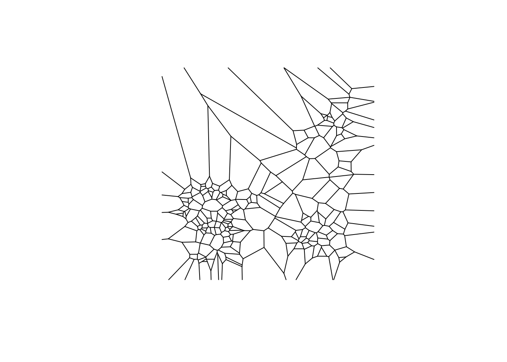
This function will be used to convert the deldir voronoi polygons to sp, where we can easily convert them to sf. We are not going to cover the individual steps of this function because it is outside the scope of these notebooks. The important thing to note here is that this function converts deldir voronoi polygons to sp.
voronoipolygons = function(thiess) {
w = tile.list(thiess)
polys = vector(mode='list', length=length(w))
for (i in seq(along=polys)) {
pcrds = cbind(w[[i]]$x, w[[i]]$y)
pcrds = rbind(pcrds, pcrds[1,])
polys[[i]] = Polygons(list(Polygon(pcrds)), ID=as.character(i))
}
SP = SpatialPolygons(polys)
voronoi = SpatialPolygonsDataFrame(SP, data=data.frame(dummy = seq(length(SP)), row.names=sapply(slot(SP, 'polygons'),
function(x) slot(x, 'ID'))))
}Again, we can use the base R plot function to take a look at voronoi polygons. Now that they are class sp, we don’t need the extra parameters in plot.
v <- voronoipolygons(vtess)
plot(v)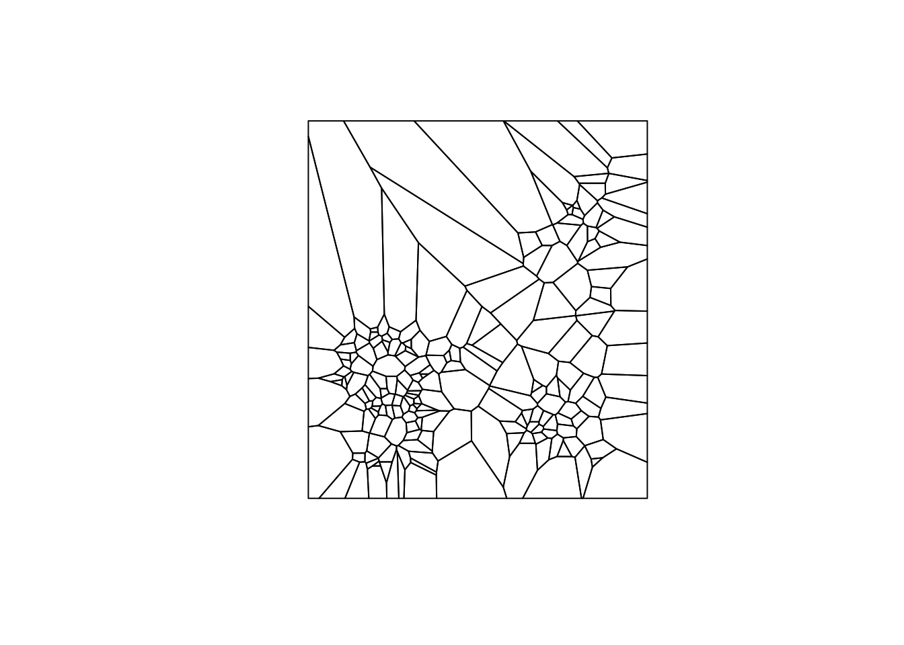
With the voronoi polygons in sp class, we can easily conert them to sf with st_as_sf. Again we use the base R plot function to view the polygons.
vtess.sf <- st_as_sf(v)
plot(vtess.sf$geometry)
Now that we have the voronoi polygons as an sf object, we can use the queen contiguity process outline in the Contiguity Based Weights notebook. We will briefly cover each step of the process. For more indepth information please see the Contiguity Based Weights notebook.
To start we create a function for queen contiguity, which is just st_relate with the specified pattern for queen contiguity which is F***T****
st_queen <- function(a, b = a) st_relate(a, b, pattern = "F***T****")We apply the queen contiguity function to the voronoi polygons and see that the class of the output is sgbp. This structure is close to the nb structure, but has a few differences that we will need to correct to use the rest of spdep functionality.
queen.sgbp <- st_queen(vtess.sf)
class(queen.sgbp)## [1] "sgbp"This function converts type sgbp to nb. It is covered in more depth in the Contiguity Based Weight notebook. In short, it explicitly changes the name of the class and deals with the observations that have no neighbors.
as.nb.sgbp <- function(x, ...) {
attrs <- attributes(x)
x <- lapply(x, function(i) { if(length(i) == 0L) 0L else i } )
attributes(x) <- attrs
class(x) <- "nb"
x
}We use as.nb.sgbp to convert neighbor types and then check the class with class.
queen.nb <- as.nb.sgbp(queen.sgbp)
class(queen.nb)## [1] "nb"To go from neighbors object to weights object, we use nb2listw, with default parameters, we will get row standardized weights.
queen.weights <- nb2listw(queen.nb)The Moran Scatter Plot
Concept
Moran’s I
Moran’s I statistic is arguably the most commonly used indicator of global spatial autocorrelation. It was initially suggested by Moran (1948), and popularized through the classic work on spatial autocorrelation by Cliff and Ord (1973). In essence, it is a cross-product statistic between a variable and its spatial lag, with the variable expressed in deviations from its mean. For an observation at location i, this is expressed as \(z_i = x_i - \bar{x}\), where \(\bar{x}\)is the mean of variable x.
Moran’s I statistic is then:
\[I = \frac{\Sigma_i\Sigma_jw_{ij}z_iz_j/S_0}{\Sigma_iz_i^2/n}\] with \(w_{ij}\) as elements of the spatial weights matrix, \(S_0 = \Sigma_i\Sigma_jw_{ij}\) as the sum of all of the weights and n as the number of observations.
Permutation inference
Inference for Moran’s I is based on a null hypothesis of spatial randomness. The distribution of the statistic under the null can be derived using either an assumption of normality (independent normal random variates), or so-called randomization (i.e., each value is equally likely to occur at any location).
An alternative to an analytical derivation is a computational approach based on permutation. This calculates a reference distribution for the statistic under the null hypothesis of spatial randomness by randomly permuting the observed values over the locations. The statistic is computed for each of these randomly reshuffled data sets, which yields a reference distribution.
This distribution is then used to calculate a so-called pseudo p-value. This is found as \[p = \frac{R +1}{M+1}\] where R is the number of times the computed Moran’s I from the spatial random data sets (the permuted data sets) is equal to or more extreme than the observed statistic. M equals the number of permutations. The latter is typically taken as 99, 999, etc., to yield nicely rounded pseudo p-values.
The pseudo p-value is only a summary of the results from the reference distribution and should not be interpreted as an analytical p-value. Most importantly, it should be kept in mind that the extent of significance is determined in part by the number of random pemutations. More precisely, a result that has a p-value of 0.01 with 99 permutations is not necessarily more significant than a result with a p-value of 0.001 with 999 permutations.
Moran scatter plot
The Moran scatter plot, first outlined in Anselin (1996), consists of a plot with the spatially lagged variable on the y-axis and the original variable on the x-axis. The slope of the linear fit to the scatter plot equals Moran’s I.
We consider a variable z, given in deviations from the mean. With row-standardized weights, the sum of all the weights (S0) equals the number of obsevations (n). As a result, the expression for Moran’s I simplifies to:
\[I= \frac{\Sigma_i\Sigma_jw_{ij}z_iz_j}{\Sigma_iz_i^2} = \frac{\Sigma_i(z_i*\Sigma_jw_{ij}z_j)}{\Sigma_iz_i^2}\]
Upon closer examination, this turns out to be the slope of a regression of \(\Sigma_jw_{ij}z_i\) on \(z_i\) This is the principle underlying the Moran scatter plot.
An important aspect of the visualization in the Moran scatter plot is the classification of the nature of spatial autocorrelation into four categories. Since the plot is centered on the mean (of zero), all points to the right of the mean have \(z_i>0\) and all points to the left have \(z_i<0\). We refer to these values respectively as high and low, in the limited sense of higher or lower than average. Similarly, we can classify the values for the spatial lag above and below the mean as high and low.
The scatter plot is then easily decomposed into four quadrants. The upper-right quadrant and the lower-left quadrant correspond with positive spatial autocorrelation (similar values at neighboring locations). We refer to them as respectively high-high and low-low spatial autocorrelation. In contrast, the lower-right and upper-left quadrant correspond to negative spatial autocorrelation (dissimilar values at neighboring locations). We refer to them as respectively high-low and low-high spatial autocorrelation.
The classification of the spatial autocorrelation into four types begins to make the connection between global and local spatial autocorrelation. However, it is important to keep in mind that the classification as such does not imply significance. This is further explored in our discussion of local indicators of spatial association (LISA).
Creating a Moran scatter plot
Before we create the Moran’s I scatterplot, we will get the statistic using moran from spdep. For this function, we need the a variable to do the Moran’s I on, a weights structure, the length of the dataset, and then Szero of the queen weights, which calculates the constants needed for tests of spatial autocorrelation.
moran <- moran(clev.points$sale_price, queen.weights, length(queen.nb), Szero(queen.weights))
moran$I## [1] 0.2810649We get a value of .281, which is the Moran’s I statistic, which also corresponds to the slope of the Moran’s I scatter plot.
In creating the Moran’s I scatterplot, we will need to to create a lag variable of sale price from our queen weights. This is just done with the function lag.listw, which takes a weights structure and a variable of equal length to create a lag variable from.
clev.points$lagged_sale_price <- lag.listw(queen.weights,clev.points$sale_price)
clev.points$lagged_sale_price## [1] 83287.500 112912.500 80178.571 108550.000 58375.000 96816.667
## [7] 115600.000 41503.571 59732.143 80025.000 48785.714 110750.000
## [13] 103000.000 72300.000 113050.000 141918.167 112900.000 55142.857
## [19] 140594.143 88871.429 213734.833 176844.143 201950.000 134800.000
## [25] 67350.000 46371.375 88125.000 137600.000 107625.000 28357.143
## [31] 26218.750 9025.000 18291.667 25950.000 7002.667 41863.300
## [37] 28187.500 17300.000 10250.000 25333.333 18418.750 21437.500
## [43] 26430.000 20771.000 60539.000 43412.500 102080.375 24936.667
## [49] 29619.143 28094.200 16657.000 18691.500 22193.625 21575.667
## [55] 17804.571 128700.000 35710.400 45935.250 36411.500 42500.000
## [61] 82133.333 71680.000 81100.000 55733.333 69066.667 66600.000
## [67] 39300.000 59750.000 58000.000 48625.000 45593.750 15441.667
## [73] 47174.750 33416.667 35150.000 34083.500 51762.500 36304.750
## [79] 31783.600 12908.000 14676.600 15166.667 22483.333 19541.667
## [85] 20426.600 21100.000 36212.000 20900.000 32775.000 29946.600
## [91] 44350.333 24431.286 21279.750 62380.000 21683.667 25914.900
## [97] 42369.667 8481.000 10904.800 13657.000 13830.000 14412.250
## [103] 24264.143 14487.333 32960.571 12226.800 8708.500 12655.667
## [109] 15714.286 20383.333 21151.667 10258.571 18451.667 131651.500
## [115] 20420.000 182072.714 140650.000 22034.000 43550.000 53100.000
## [121] 41488.889 26500.000 13095.714 8764.444 9208.667 6156.667
## [127] 11761.333 5529.500 7409.600 40510.000 34388.286 9250.000
## [133] 9128.000 15470.000 12699.714 18842.000 14440.000 10125.000
## [139] 17967.500 9500.000 30250.000 17400.000 11174.000 13248.833
## [145] 9068.750 25633.333 7248.500 66900.000 62812.500 67125.000
## [151] 88250.000 28300.000 78900.000 71093.750 9750.000 14085.714
## [157] 12350.000 15216.667 25670.000 26750.000 57414.286 21920.000
## [163] 43500.000 16912.500 19062.500 15666.667 65044.444 20583.333
## [169] 11358.333 34816.667 34750.000 39360.000 29092.857 24422.222
## [175] 23360.000 42685.714 29080.000 16983.333 21666.667 31960.000
## [181] 24400.000 7242.857 16180.000 28216.667 9633.333 32742.857
## [187] 28833.333 21360.000 29391.667 24414.286 34720.000 14083.333
## [193] 14860.000 17916.667 23133.333 27850.000 18370.000 16975.000
## [199] 45980.000 36700.000 33583.333 29750.000 35416.667 28614.286
## [205] 22000.000We need standardized values for both the lag variable and the sale price variable to build the Moran’I scatterplot. Standardized values are just z scores for each observation(\(z_i =\frac{ x_i -\mu}{\sqrt{Var(x)}}\)). To get the standardized values, we will use standardize from the robustHD package. We could very easily calculate these with Base R vectorized operations, but it is faster to just use a package function.
clev.points$standardized_sale_price <- standardize(clev.points$sale_price)
clev.points$standardized_lag_sale_price <- standardize(clev.points$lagged_sale_price)To construct the moran’s I scatterplot, we will use ggplot2 for more aesthically pleasing plots. We will not go into too much depth on the options available for for these plots, but for more information, check out ggplot2 documentation. In addition, The first Exploratory Data Analysis notebook is also a good resource to look at.
To make the Moran’s I scatterplot, we make a scatterplot in ggplot2 with the standardized sale price values as the x axis and the standardized lag sale price variable as the y axis. We use geom_point to add the points to the plot. geom_smooth adds a regression line. The default option is a loess smooth line, we specify the method = lm to get a standard linear regression line . We add dotted lines at the x and y axis to separate the 4 types of spatial autocorrelation. We do this with geom_hline for the x axis and geom_vline for the y axis. To get the speciifcations of the scatterplot to better match up with GeoDa, we set the x and y scale limits to -10 and 10.
ggplot(data = clev.points, aes(x=standardized_sale_price, y = standardized_lag_sale_price)) +
geom_point() +
geom_smooth(method = "lm", se = FALSE) +
geom_hline(yintercept = 0, lty = 2) +
geom_vline(xintercept = 0, lty = 2) +
xlim(-10,10) +
ylim(-10,10) +
ggtitle("Moran scatter plot sale price")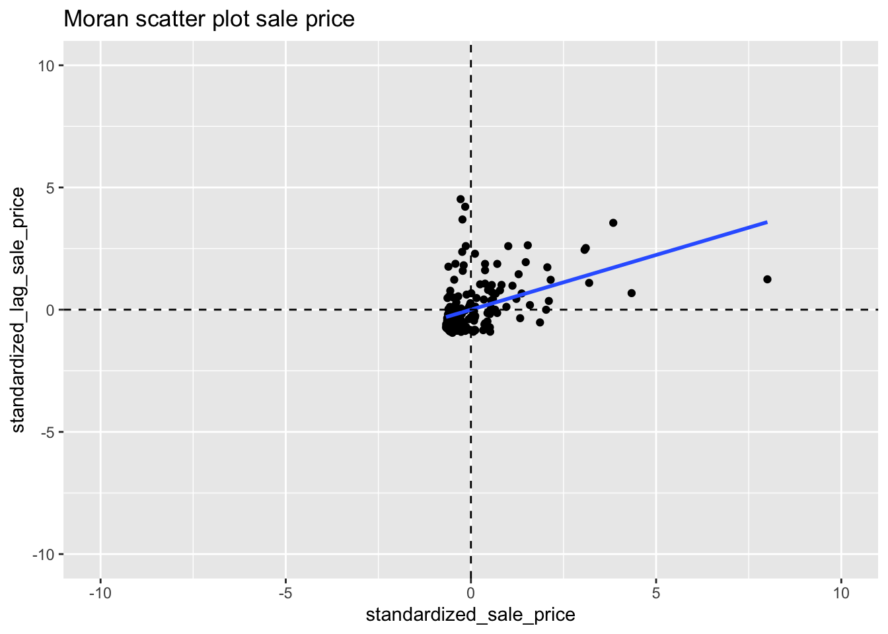
Interpretation
We can see that the shape of the point cloud is determined by the presence of several outliers on the high end (e.g., larger than three standard deviational units from the mean). One observation, with a sales price of 527,409 (compared to the median sales prices of 20,000), is as large as 8 standard deviational units above the mean. On the lower end of the spectrum (to the left of the dashed line in the middle that represents the mean), there is much less spread in the house prices, and those points end up bunched together. By eliminating some of the outliers, one may be able to see more detail for the remaining observations, but we will not pursue that here.
Assessing significance
We have an estimate of the Moran’s I statistic, but no information on the significance of that statistic. This can be obtained by constructing a distribution by means of random assignment. In order to do this, we first choose the number of permutations desired, which will directly affect the minimum pseudo p-value we can obtain for the test statistic. In the case of 999 permutation the minimum p-value would be .001, which would mean none of the sample distribution statistics are as extreme or more extreme than the test statistic.
Replicability - the random seed
To faciliate replication, it is best to set a seed for the random number generator. The one used in GeoDa is 123456789, so we will demonstrate how to set the seed here. It is just set.seed and the desired seed number as an input.
set.seed(123456789)Reference distribution
To make the reference distribution, we will need to draw 999 randomized samples of the housing point data of the same size as the number of observations in the housing point data. This random sample will allow us to assign the values to random locations, which will give us a spatially random distribution. To get to this point, we will build up in steps in order to better understand the process.
We start by taking one random sample of our points with the base R sample function. We choose the same size as the number of sale price data observations to make a spatially randomized vector of our sale price data. The point of this is to randomly assign the housing prices to the voronoi polygons, then to compute the Moran’s I statistic for the spatially random assignment based off the original weights structure.
draw <- sample(clev.points$sale_price, size = length(clev.points$sale_price))
draw## [1] 5000 10000 8500 4775 4500 5200 28500 62000 12000 20000
## [11] 30000 17000 19000 167000 24900 41500 65000 131650 26400 12000
## [21] 172500 65000 2500 120000 305000 15500 5000 69000 6800 49000
## [31] 85000 15000 228000 1300 14500 14000 42500 4250 116250 29000
## [41] 11750 14500 42000 15000 73400 24800 10000 5000 84900 235500
## [51] 40000 28000 47000 7000 11000 275000 16500 29150 100000 155000
## [61] 8000 15000 63000 34750 7900 13000 18000 8000 48500 15000
## [71] 26000 38500 17500 8000 16900 23500 65000 21119 15000 75000
## [81] 76000 7000 48000 27750 15000 51000 9000 6300 4924 72000
## [91] 25750 33500 45900 13000 5500 125000 7500 10000 22000 10000
## [101] 73000 26000 20000 9000 11582 169500 20000 25000 8600 72900
## [111] 5000 230000 6375 2910 23000 3000 41000 16500 3000 32500
## [121] 5000 25250 4149 40000 25750 7000 25000 8000 68900 16000
## [131] 48500 15000 109900 11500 6483 49000 27600 122500 6370 9500
## [141] 32500 27000 47000 3500 45000 135000 11500 5968 13100 8000
## [151] 6500 25000 138500 5000 11750 10500 5000 38200 10000 25000
## [161] 7000 7000 29900 75000 34000 7000 527409 4000 15000 19000
## [171] 5500 76000 20000 21199 41069 78000 15000 26000 1049 65000
## [181] 103000 92000 8400 10000 82500 56900 20000 13000 2100 81500
## [191] 15834 20000 19971 12000 1448 70000 5800 64000 48900 32500
## [201] 165000 5000 16000 11750 89500Now we can begin to calculate the Moran’s I statistic by first calculating the spatial lag variable based on our queen weights and the spatially random sample.
lag1 <- lag.listw(queen.weights,draw)We can get the Moran’s I statistic by regressing the standardized values of the spatial lag variable on the standardized values of the random draw. We can get the standardized value with the standardize function. The summary function allows us to see a summary of the regression statistics.
lmfit <- lm(standardize(lag1) ~ standardize(draw))
summary(lmfit)##
## Call:
## lm(formula = standardize(lag1) ~ standardize(draw))
##
## Residuals:
## Min 1Q Median 3Q Max
## -1.1296 -0.6232 -0.2418 0.2690 5.5560
##
## Coefficients:
## Estimate Std. Error t value Pr(>|t|)
## (Intercept) 6.833e-17 6.997e-02 0.000 1.000
## standardize(draw) -3.771e-02 7.014e-02 -0.538 0.591
##
## Residual standard error: 1.002 on 203 degrees of freedom
## Multiple R-squared: 0.001422, Adjusted R-squared: -0.003497
## F-statistic: 0.2891 on 1 and 203 DF, p-value: 0.5914The slope here is the estimate for standardize(draw). This value is fairly close to zero as the randomization process makes makes the draw spatially random.
To build our distribution, we will need to repeat this process many times over. We can accomplish this by way of a for loop. We will need somewhere to store our Moran’s I result for each iteration. To do this we will make an empty vector of a length corresponding to our desired number of permutations.
randomized_moran <- rep(NA, 999)The process here is the same as the one followed for one draw, but here we use the for loop to get 999 iterations and store the resulting Moran’s I values in the vector that we created above. First we do the random sample with the sample function. Then we make a lag variable based upon the random draw and our queen weights. Next we run the regression with the lm function between the stanardized values of the lag variable and random draw variable. Lastly, we extract the slope coefficient which is our Moran’s I statistic and store it in index i. Each iteration of the loop will store the value at the subsequent index ie 1, then 2, then 3, and so on.
for(i in 1:999){
draw <- sample(clev.points$sale_price, size = length(clev.points$sale_price))
lag <- lag.listw(queen.weights,draw)
lmfit <- lm(standardize(lag) ~ standardize(draw))
randomized_moran[i] <- lmfit$coefficients[2]
}We can obtain summary statistics of our distribution with summary
summary(randomized_moran)## Min. 1st Qu. Median Mean 3rd Qu. Max.
## -0.26215 -0.07946 -0.02163 -0.01469 0.04247 0.37970sd(randomized_moran)## [1] 0.09099489Now to get the p value, we will check the number of samples that had higher Moran’s I statistic than the observed value. To do this, we use the base R which function to get a vector of the indices at which the conditional is TRUE. We then get the length of the vector with length.
length(which(randomized_moran > .281))## [1] 7Since the result is 1, there is only 1 value in all of the permutations that is higher than the test statistic. This means that the p value is .002, \(\frac{1 + R}{1 + M}\), where R = 1 and M = 999.
There are a number of ways we can visualize the distribution that we just constructed in R. We will use ggplot2 to do these visualizations because it looks much better than base R visualizations.
To start, we convert our vector with the randomized moran’s I values into a data frame, so we can use ggplot2 functions. For this, we just use the data.frame function with the vector of randomized moran’s I values as an argument and then assign a name for the column, which is just moran in this case.
The first option is a density plot. This requires the standard ggplot function with aes containing the x axis. Additionally we need geom_density. We use geom_vline to plot the mean of the distribution and our observed statistic.
df <- data.frame(moran = randomized_moran)
ggplot(data = df,aes(x=moran)) +
geom_density() +
geom_vline(xintercept = moran[[1]], col = "green") +
geom_vline(xintercept = mean(randomized_moran), col = "blue")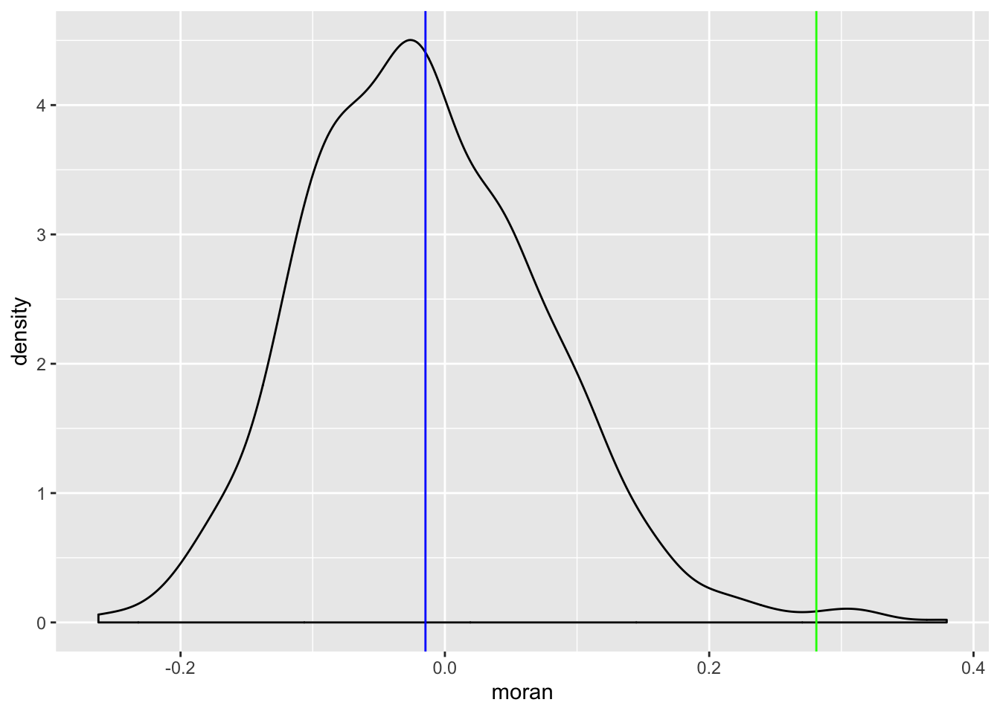
The next option is a histogram. The only difference here is that we use geom_histogram instead of `geom_density.
ggplot(data = df, aes(x=moran)) +
geom_histogram() +
geom_vline(xintercept = moran[[1]], col = "green") +
geom_vline(xintercept = mean(randomized_moran), col = "blue")## `stat_bin()` using `bins = 30`. Pick better value with `binwidth`.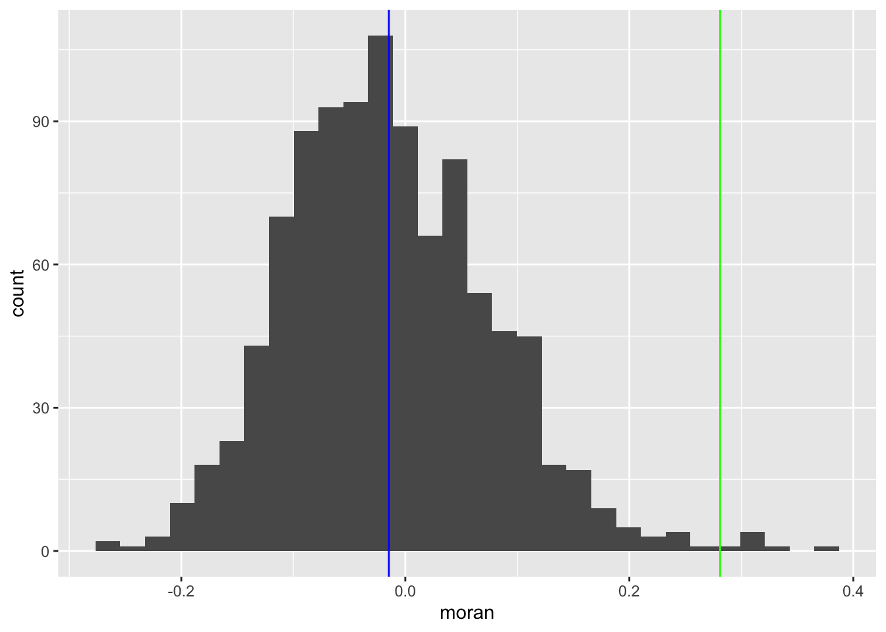 #### LOWESS smoother
The LOWESS smoother is not implemented directly in ggplot2, but can be found in an add-on package. We use the Hmisc package to add this functionality to the ggplot2 plots. To add the smoother to our Moran’s I scatter plot, we use the stat_plsmo from the Hmisc package. The default span for GeoDa is .2 so we will set the span = parameter to .2.
With the LOWESS smoother, we can see potential structural breaks in the pattern of spatial autocorrelation. For example some parts of the data, the curve may be very steep, and positive, indicating strong spatial autocorrelation, whereas in other parts, it could be flat, indicating no spatial autocorrelation.
ggplot(data = clev.points, aes(x=standardized_sale_price, y = standardized_lag_sale_price)) +
geom_point() +
stat_plsmo(span = .2, color = "blue") +
geom_hline(yintercept = 0, lty = 2) +
geom_vline(xintercept = 0, lty = 2) +
xlim(-10,10) +
ylim(-10,10) +
ggtitle("LOWESS smooth of Moran Scatterplot")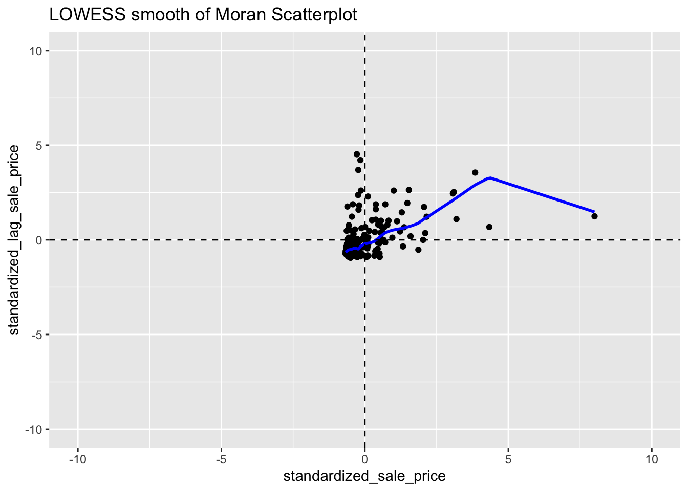
Chow test Moran’s I scatterplot
The Chow test is a statistical test of whether or not the coeffiecients of two different linear regressions are equal. In the case of the Moran’s I scatterplot, it is just the slope of the regression line and the intercepts, since it is a simple linear regression.
The brushing operation in GeoDa is fairly difficult to implement in R, but we can do a less interactive version. First we must consider which criteria we want to select points on. This could be anything from its location to other characteristics in the data. In our case we will do it based on location. As an approximation for the midpoint of the set of points, we take the the mean of the x and y coordinates. From there we assign “Select” to the points in the bottom left quadrant and “Rest” to the rest of the points by way of the if_else function. This function takes a conditional, a result to assign in the case where the conditional is TRUE, and a result to assign when the conditional is FALSE. In our case it is “Select” and “Rest”.
mid_x <- mean(clev.points$x)
mid_y <- mean(clev.points$y)
clev.points<- clev.points %>% mutate(bottom_left = if_else((x < mid_x & y < mid_y),"Select", "Rest"))Before we run the chow test, we will visualize the difference in slopes of the selected data, non-selected data and the aggregate data. With ggplot2, we can accomplish this by setting categorical colors based whether or not an observation is “Selected” or “Rest”. To do this, we specify aes(color = bottom_left) in both geom_point and geom_smooth. This will give us colored points and regression lines for “Selected” and “Rest”. Then to get blue and red colors, we use scale_color_manual. For this plot, we do not set x and y limits because the -10 to 10 speciifcation is too dificult to see the differences in the regression lines.
ggplot(clev.points, aes(x=standardized_sale_price,y=standardized_lag_sale_price)) +
geom_point(aes(color=bottom_left)) +
geom_smooth(aes(color=bottom_left), method = lm, se = FALSE) +
geom_smooth(method=lm,se = FALSE, color = "black") +
scale_color_manual(values=c("blue","red")) +
labs(color="Selection") +
geom_hline(yintercept = 0, lty = 2) +
geom_vline(xintercept = 0, lty = 2) +
ggtitle("Chow test Moran Scatterplot")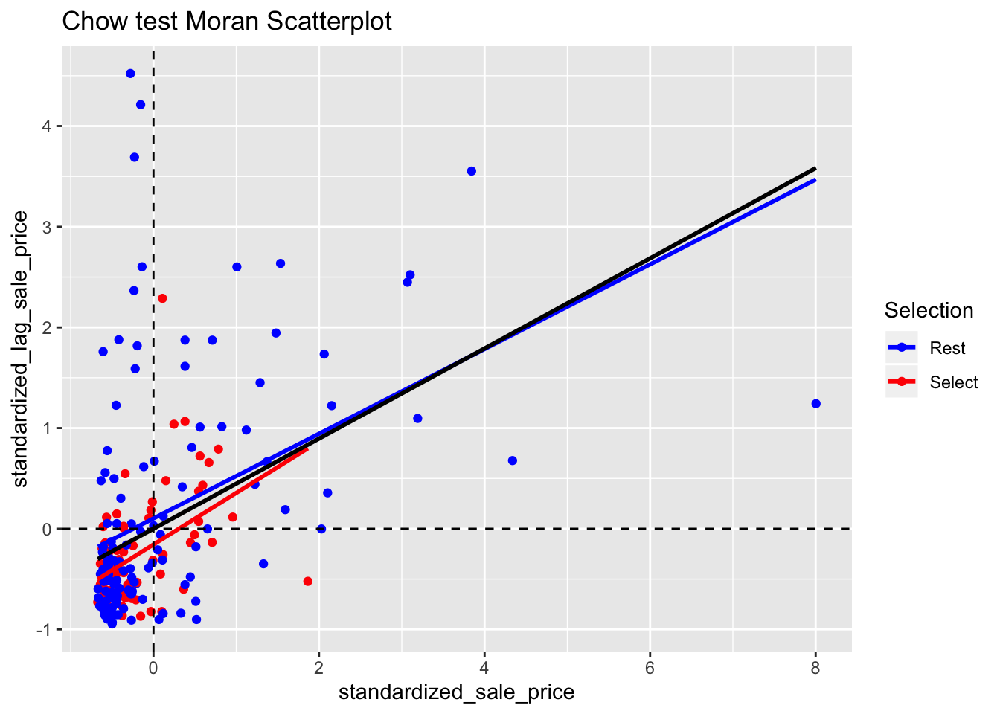
To perform the chow test, we need two separate data frames as inputs for the function. To get the two data frames, we use the tidyverse filter function. This function filter out observations based on a conditional. TRUE values for the conditional remain in the data frame while FALSE values are filtered out.
clev.select <- clev.points %>% filter(bottom_left == "Select")
clev.rest <- clev.points %>% filter(bottom_left == "Rest")Now we use the base R lm function to run separate regressions on the standardized lag variable and standardized sale price variable.
reg.select <- lm(standardized_lag_sale_price~standardized_sale_price, data=clev.select)
reg.rest <- lm(standardized_lag_sale_price~standardized_sale_price, data=clev.rest)Now we use the summary function on each regression object to get summary statistics of the residuals, the regression coefficients and and their respective standard errors, the R squared values, and the F statistic.
summary(reg.select)##
## Call:
## lm(formula = standardized_lag_sale_price ~ standardized_sale_price,
## data = clev.select)
##
## Residuals:
## Min 1Q Median 3Q Max
## -1.32083 -0.26382 -0.08486 0.25641 2.38954
##
## Coefficients:
## Estimate Std. Error t value Pr(>|t|)
## (Intercept) -0.15667 0.06062 -2.584 0.0117 *
## standardized_sale_price 0.51228 0.11818 4.335 4.53e-05 ***
## ---
## Signif. codes: 0 '***' 0.001 '**' 0.01 '*' 0.05 '.' 0.1 ' ' 1
##
## Residual standard error: 0.492 on 74 degrees of freedom
## Multiple R-squared: 0.2025, Adjusted R-squared: 0.1917
## F-statistic: 18.79 on 1 and 74 DF, p-value: 4.534e-05summary(reg.rest)##
## Call:
## lm(formula = standardized_lag_sale_price ~ standardized_sale_price,
## data = clev.rest)
##
## Residuals:
## Min 1Q Median 3Q Max
## -2.2276 -0.6161 -0.3336 0.2146 4.5370
##
## Coefficients:
## Estimate Std. Error t value Pr(>|t|)
## (Intercept) 0.10241 0.09335 1.097 0.275
## standardized_sale_price 0.42072 0.07816 5.383 3.42e-07 ***
## ---
## Signif. codes: 0 '***' 0.001 '**' 0.01 '*' 0.05 '.' 0.1 ' ' 1
##
## Residual standard error: 1.056 on 127 degrees of freedom
## Multiple R-squared: 0.1858, Adjusted R-squared: 0.1793
## F-statistic: 28.97 on 1 and 127 DF, p-value: 3.418e-07We see that the slopes vary by about .08 and the intercepts vary by .25
To run the chow test, we need 4 inputs for chow.test. We need the two standardized variables from the the “Select” data frame: clev.select and the two standardized variables from the the “Rest” data frame: clev.rest.
chow <- chow.test(clev.select$standardized_lag_sale_price, clev.select$standardized_sale_price, clev.rest$standardized_lag_sale_price, clev.rest$standardized_sale_price)
chow## F value d.f.1 d.f.2 P value
## 2.2974700 2.0000000 201.0000000 0.1031467With a p-value of .103 we do not have significant evidence to conclude that the slopes of the two regressions are different under a standard alpha level of .05.
Spatial Correlogram
Concept
A non-parametric spatial correlogram is an alternative measure of global spatial autocorrelation that does not rely on the specification of a spatial weights matrix. Instead, a local regression is fit to the covariances or correlations computed for all pairs of observations as a function of the distance between them (for example, as outlined in Bjornstad and Falck 2001).
With standardized variables z, this boils down to a local regression:
\[z_iz_j = f(d_{ij}) + u\]
where \(d_{ij}\) is the distance between a pair of locations i - j, u is an error term and f is a non-parametric function to be determined from the data. Typically, the latter is a LOWESS or kernel regression.
Creating a spatial correlogram
In GeoDa, creating a spatial correlogram is much more straight forward than in R. The process in r requires us to start with the sale price points, then to create a neighbors structure base on the distance breaks desired for the correlogram.
To start, we use cbind to put the x and y coordinates together for use in the distance based neighbor functions of spdep.
coords <- cbind(clev.points$x, clev.points$y)Now we create distance based neighbors coordinate matrix and lower distance bound and an upper distance bound, which is used to define neighbors. We use dnearneigh to create the distance band neighbors. For more in depth information on distance based neighbors, please see the Disatnce Based Weights notebook. We use a distance of 4823.27 to emulate the first example in the GeoDa workbook.
dist.band.nb <- dnearneigh(coords,0,4823.27)Using the spdep function `sp.correlogram, we can get measures of spatial autocorrelation for an input number of lag orders. We can then use the base R plotting function to get a look at the autocorrelation values for each lag order.
sp <- sp.correlogram(dist.band.nb, clev.points$sale_price, order = 10, method = "I",style = "W", randomisation = TRUE, spChk = NULL, zero.policy = TRUE)
plot(sp)
To get a better looking plot, we can extract the moran’s I values and put them into a data frame, so we can use ggplot2 plotting functionality.
morans <- sp$res[,1]
df <- data.frame(Morans_I = morans,lags = 1:10 )
ggplot(data = df, aes(x=lags,y=Morans_I)) +
geom_point() +
geom_smooth(col = "purple", se = FALSE) +
geom_hline(yintercept = 0) +
ylim(-.5,.5) ## `geom_smooth()` using method = 'loess' and formula 'y ~ x'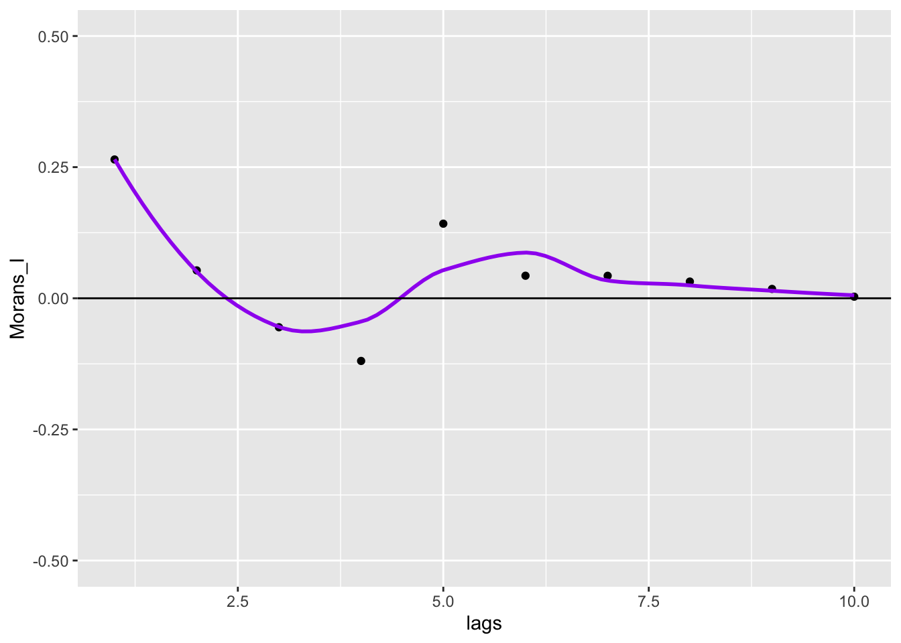
To get closer to the GeoDa correlogram plotting functionality, we can convert lags to euclidean distance.
df$euclidean_distance <- df$lags * 4823.3
ggplot(data = df, aes(x=euclidean_distance,y=Morans_I)) +
geom_point() +
geom_smooth(col = "purple", se = FALSE) +
geom_hline(yintercept = 0) +
ylim(-.5,.5) +
scale_x_continuous(breaks = df$euclidean_distance)## `geom_smooth()` using method = 'loess' and formula 'y ~ x'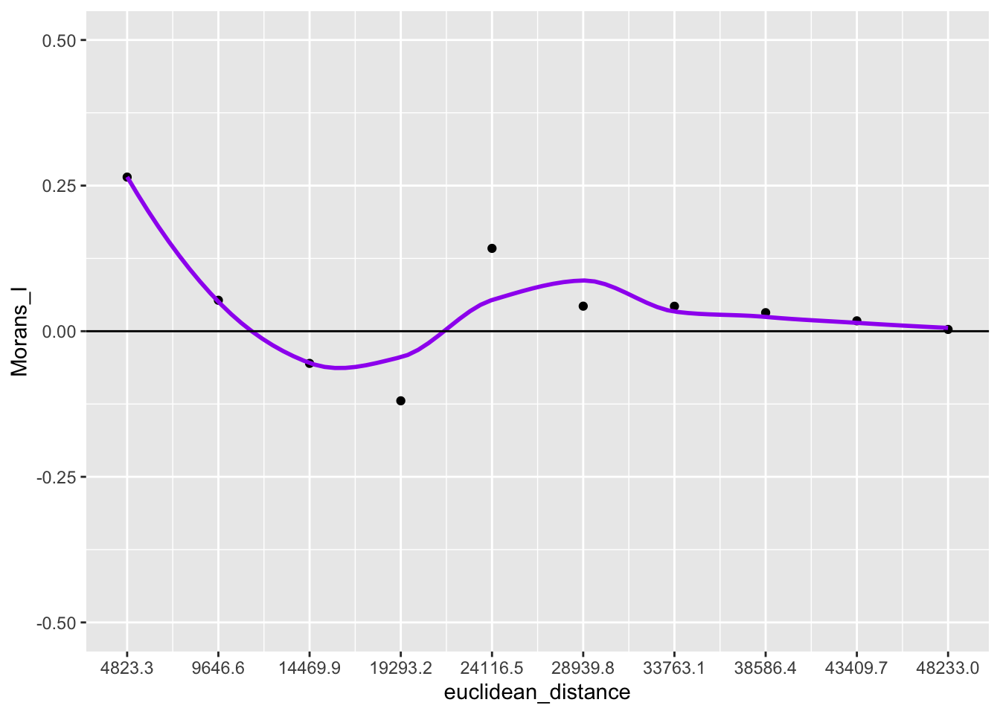
The spatial correlogram can be paired with a bar chart that shows the number of neighbor pairs for each lag order. To get this information, we will need to work outside the spdep package and compute them ourselves.
To begin, we set up an empty vector to store the pair numbers.
pairs <- rep(NA, 10)Here we run dnearneigh on each interval of euclidean distance that corresponds to a lag in 1 to 10. To get the number of pairs for each lag order, we simply sum up the cardinality of the neighbor structure per each lag order and then divide it by two because this sum gives the total number of neighbors and the total number of pairs will be half this number.
for (i in 1:10){
nb <- dnearneigh(coords, (i - 1) * 4823.28, i * 4823.28)
pairs[i] <- sum(card(nb)) / 2
}Now we create a data frame from the two vectors we create with the lag order values and associated euclidean distance values.
df <- data.frame(lag_order = 1:10, auto_corr = morans, num_pairs = pairs)
df$euclidean_distance <- df$lag_order * 4823Here we create two different plots, one is a histogram with the number of pairs in each bin, the other is the spatial correlogram
p1 <- ggplot(data = df, aes(x = euclidean_distance,y = auto_corr)) +
geom_point() +
geom_smooth(col = "purple", se = FALSE) +
geom_hline(yintercept = 0) +
ylim(-1,1) +
scale_x_continuous(breaks = df$euclidean_distance)
p2 <- ggplot(data = df, aes(x=euclidean_distance,y = num_pairs, fill = as.factor(euclidean_distance))) +
geom_bar(stat = "identity") +
scale_fill_brewer(palette = "Paired") +
theme(legend.position = "none") +
geom_text(aes(label=num_pairs), position = position_dodge(width = .9), vjust=-.25) +
ylim(0, 1.2 * max(pairs)) +
scale_x_continuous(breaks = df$euclidean_distance)
p1## `geom_smooth()` using method = 'loess' and formula 'y ~ x'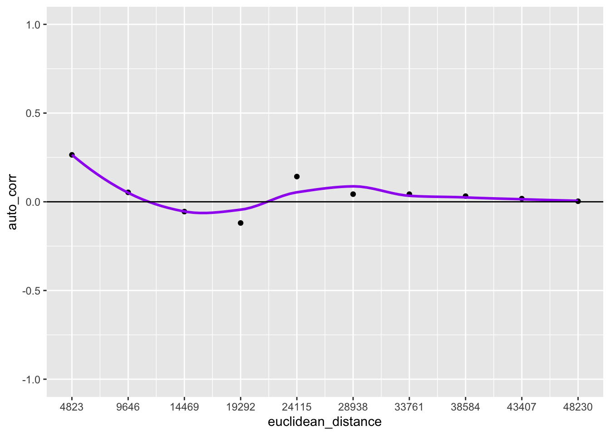
p2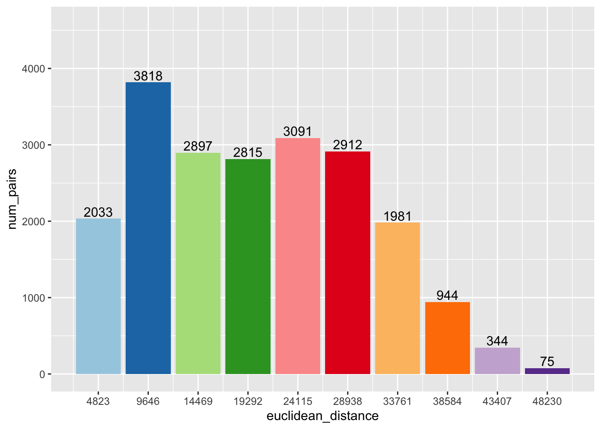
Using grid.arrange from the gridExtra package, we can combine the two plots into one image.
grid.arrange(p1,p2,ncol = 1)## `geom_smooth()` using method = 'loess' and formula 'y ~ x'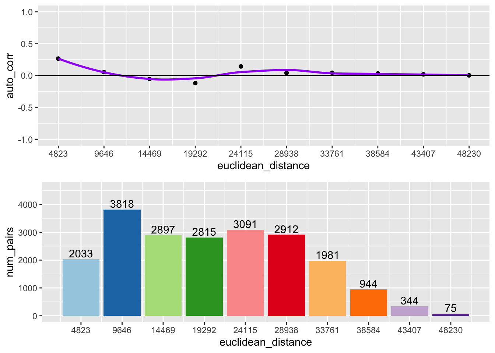
Following the same process outlined above, we can make a function that constructs the correlogram based on the desired lag order, distance band, variable, and coordinates.
geoda_correlogram <- function(lag.order, distance, var,coords){
# Funtion that outputs a spatial correlogram with a bar plot of neighbor pairs
# Inputs:
# lag.order: The desired number of lag orders to be included in the plot
# distance: The desired distance band for the lags
# var: A variable to analyze the spatial autocorelation
# coords: A matrix of coordinates of the same length as var
# creating vectors to store autocorrelation values and number of pairs
pairs <- rep(NA, lag.order)
#loop to calculate number of pairs for each lag order
for(i in 1:lag.order) {
nb <- dnearneigh(coords, (i-1) * distance, i * distance)
pairs[i] <- sum(card(nb)) / 2
}
# Computing spatial autocorrelation
nb1 <- dnearneigh(coords, 0 , distance)
sp <- sp.correlogram(nb1, var, order = lag.order, method = "I", style = "W", randomisation = FALSE, spChk = NULL, zero.policy = TRUE)
# Putting the lag orders, autocorrelation, pairs and distance into a dataframe
df <- data.frame(lag = 1:lag.order, num_pairs = pairs, auto_corr = sp$res[,1])
df$euclidean_distance <- df$lag * round(distance, digits = 0)
# Making plots
p1 <- ggplot(data = df, aes(x = euclidean_distance,y = auto_corr)) +
geom_point() +
geom_smooth(col = "purple", se = FALSE) +
geom_hline(yintercept = 0) +
ylim(-1,1) +
scale_x_continuous(breaks = df$euclidean_distance)
p2 <- ggplot(data = df, aes(x=euclidean_distance,y=num_pairs, fill = as.factor(euclidean_distance))) +
geom_bar(stat= "identity") +
scale_fill_brewer(palette = "Paired") +
theme(legend.position = "none") +
geom_text(aes(label=num_pairs), position = position_dodge(width = .9), vjust=-.25) +
ylim(0, 1.2 * max(pairs)) +
scale_x_continuous(breaks = df$euclidean_distance)
grid.arrange(p1,p2,ncol =1)
}
geoda_correlogram(10, 4823.3, clev.points$sale_price, coords)## `geom_smooth()` using method = 'loess' and formula 'y ~ x'
Interpretation
The top of the above graph is the actual correlogram. This depicts how spatial autocorrelation changes with distance. The first dot correpsonds with distances between 0 and 4823 feet. The dashed line indicates a spatial autocorrelation of 0. The autocorrelation starts positive and then fluctates above and below the dashed line.
University of Chicago, Center for Spatial Data Science – anselin@uchicago.edu,morrisonge@uchicago.edu↩
Use
setwd(directorypath)to specify the working directory.↩Use
install.packages(packagename).↩